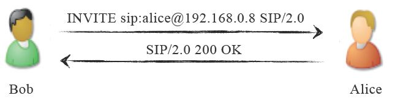
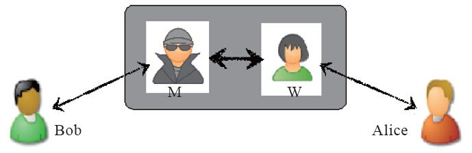
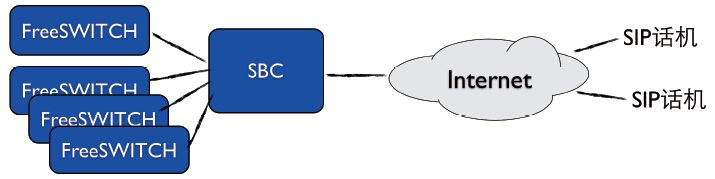
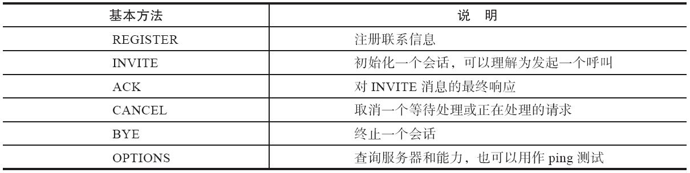
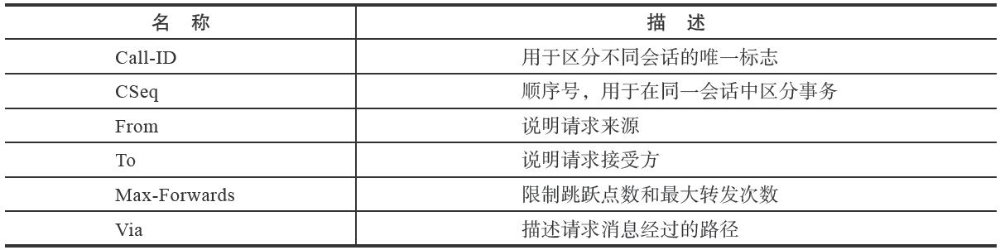

7.1 SIP协议基础
会话初始协议（Session Initiation Protocol）是一个控制发起、修改和终结交互式多媒体会话的信令协议。它是由IETF（Internet Engineering Task Force，Internet工程任务组）在RFC 2543 [1] 中定义的，最早发布于1999年3月，后来在2002年6月又发布了一个新的标准RFC 3261 [2] 。除此之外，还有很多相关的或是在SIP基础上扩展出来的RFC，如关于SDP的RFC 4566 [3] 、关于会议的RFC 4579 [4] 等。
首先，我们先来看一下SIP协议中的基础知识和基本概念，为了便于理解，我们对照大家可能更熟悉的HTTP协议来进行讲解 [5] 。
7.1.1 HTTP与SIP协议基础
SIP是一个基于文本的协议，这一点与HTTP和SMTP类似。我们来对比一组简单的HTTP请求与SIP请求。
HTTP:
GET /index.html HTTP/1.1
SIP:
INVITE sip:seven@freeswitch.org.cn SIP/2.0
两者类似，请求均有三部分组成：在HTTP请求中，GET指明一个获取资源（文件）的动作，/index.html则是资源的地址，最后HTTP/1.1是协议版本号；而在SIP中，INVITE表示发起一次呼叫请求，seven@freeswitch.org.cn为请求的地址，也称为SIP URI或AOR（Adress of Record，用户的公开地址），第三部分的SIP/2.0也是版本号。其中，SIP URI类似一个电子邮件地址，其格式为“协议:名称@主机”。这里SIP URI格式中的“协议”与HTTP和HTTPS相对应，也有SIP和SIPS两种（后者是加密的，如sips:seven@freeswitch.org.cn）；“名称”可以是一串数字的电话号码，也可以是字母表示的名称；而“主机”可以是一个域名，也可以是一个IP地址。
对于HTTP来说，好多人可能既熟悉又陌生。熟悉的是，天天听到看到它；陌生的是，好多人又不是真正了解HTTP协议。大家通常在使用浏览器上网时，浏览器与Web服务器间的通信使用的就是HTTP协议。只是，具体的协议文本和交互流程普通人看不见而已。在我们浏览网页时，浏览器作为一个HTTP客户端向远端的HTTP服务器请求我们想看的网页。HTTP返回结果后，浏览器再将收到的结果进行渲染，呈现给我们的是漂亮的页面。不过，作为一名技术人员或开发人员，我们想知道的不止于此，而是想透过浏览器，看看隐藏在浏览器背后的东西。因此，在这里我们先通过一个简单的例子来看一下HTTP协议。
CURL [6] 是一个HTTP的命令行工具和客户端，相当于一个命令行版的浏览器。命令行工具与图形界面的工具比起来，前者使用起来更灵活，并且通常更容易展现工具“背后”的东西。CURL工具使用-v命令可以看到HTTP协议的通信情况 [7] ，它与HTTP服务器的交互流程如下：
01 $ curl -v http://www.freeswitch.org.cn
02 * About to connect() to www.freeswitch.org.cn port 80 (#0)
03 * Trying 207.97.227.245...
04 * connected
05 * Connected to www.freeswitch.org.cn (207.97.227.245) port 80 (#0)
06 >
GET / HTTP/1.1
07 > User-Agent: curl/7.24.0 (x86_64-apple-darwin12.0) libcurl/7.24.0 OpenSSL/ 0.9.8r zlib/1.2.5
08 > Host: www.freeswitch.org.cn
09 > Accept: */*
10 >
11
<HTTP/1.1 200 OK
12 < Server: GitHub.com
13 < Date: Sat, 22 Jun 2013 02:30:25 GMT
14 < Content-Type: text/html
15 < Connection: keep-alive
16 < Content-Length: 8685
17 < Last-Modified: Thu, 20 Jun 2013 15:52:14 GMT
18 < Expires: Sat, 22 Jun 2013 02:40:25 GMT
19 < Cache-Control: max-age=600
20 < Vary: Accept-Encoding
21 < Accept-Ranges: bytes
22 < Vary: Accept-Encoding
23 <
24 <html>
25 <head>
26 <meta http-equiv="Content-type" content="text/html; charset=utf-8">
27 <title>FreeSWITCH-CN
中文社区</title>
28 ....
以下略 ...
在上面的例子中，我们用CURL请求网站www.freeswitch.org.cn的首页。其中，以“*”开头的都是CURL的调试信息，以“>”开头的行是客户端向服务器发出的请求，以“<”开头的行是服务器对客户端的响应 [8] 。
第2行，CURL准备连接网站www.freeswitch.org.cn的80端口；第3行，通过DNS解析得到了与该网站对应的IP地址，并向该地址发起TCP连接请求（HTTP是基于TCP的）；第4和第5行表示TCP连接成功。
连接成功后，客户端在第6行发送一个获取网页的请求：GET/HTTP/1.1。其中，GET表示获取一个资源；“/”是一个路径，表示资源的地址，这里表示网站的根目录，即网站的首页；“HTTP/1.1”为HTTP协议的版本号。User-Agent说明它是一个HTTP客户端用户代理（UA），相当于客户端自己的名片。Accept字段表示接收回复信息的类型，具体的类型称为MIME [9] ，常见的有“text/plain”（纯文本）、“text/html”（HTML网页）等。
服务器收到请求后，查找相关资源并返回结果。其中，以“<”开头的行都称为HTTP头（Header），后续的行称为HTTP正文（Body）。结果是从第11行开始的。“HTTP/1.1200 OK”也分为三个部分：其中第一部分是协议版本号；200表示状态码；OK是一个可读的描述字符串（称为Reason Phrase）。HTTP的状态码 [10] 由三位数字构成，说明如下：
·1xx表示临时响应；
·2xx表示成功的响应；
·3xx表示重定向（一般情况下浏览器会对3xx返回的地址重新发起请求，以获取新的资源，称为follow）；
·4xx表示客户端引起的错误（如请求一个不存在的地址时就会收到著名的404）或需要客户端认证（如401）；
·5xx表示服务器端的错误（服务器脚本出错等）。
在本章后面，读者会看到SIP协议也有类似的状态码。
所以，这时的“200 OK”表示返回的是一个正常的结果。起始行后面从第12行开始跟的是一些HTTP头，本例中的Content-Type表示返回的资源的类型，它的值“text/html”说明这是一个HTML文档。Content-Length表式文档正文（Body）的长度。在所有的HTTP头域结束后，会有一个空行，它标志HTTP头部的结束及消息正文的开始。HTTP响应的正文是从第24行开始的。至此，读者应该已经看到熟悉的HTTP<html>和<head>标签了。如果是浏览器收到这些响应头和正文，就会根据里面的参数对正文进行正确的渲染，呈现给用户漂亮的网页。
Body是可选的，并不是所有的请求或响应中都有Body字段，如果Content-Length为0或不存在，就表示没有Body。
SIP协议也与HTTP协议类似，如果你熟悉其中的一种，可以对比着进行学习。我们将从下节开始专门讨论SIP。
7.1.2 SIP的基本概念和相关元素
言归正传，我们回到SIP。SIP是一个对等的协议，类似P2P。它和HTTP不一样，其不是客户端服务器结构的 [11] ；也不像传统电话那样必须有一个中心的交换机，它可以在不需要服务器的情况下进行通信，只要通信双方都彼此知道对方地址（或者只有一方知道另一方的地址）即可，这种情况称为点对点通信。如图7-1所示，Bob给Alice发送一个INVITE请求，说“Hi,一起吃饭吧…”，Alice说“好的，OK”，电话就接通了。

图7-1 SIP点对点通信
在SIP网络中，Alice和Bob都称为用户代理（User Agent，UA）。UA是在SIP网络中发起或响应SIP处理的逻辑实体。UA是有状态的，也就是说，它维护会话（或称对话）的状态。UA有两种：一种是UAC（UA Client），它是发起SIP请求的一方，比如图7-1中的Bob；另一种是UAS（UA Server），它是接受请求并发送响应的一方，比如图7-1中的Alice。由于SIP是对等的，当Alice呼叫Bob时，Alice就称为UAC，而Bob则实现UAS的功能。一般来说，UA都会实现上述两种功能。
设想Bob和Alice是经人介绍认识的，而他们还不熟悉，Bob想请Alice吃饭就需要一个中间人（M）传话，而这个中间人就叫代理服务器（Proxy Server）。还有另一种中间人称为重定向服务器（Redirect Server），它以类似于这样的方式工作──中间人M告诉Bob，我也不知道Alice在哪里，但我爱人知道，要不然我告诉你我爱人的电话，你直接问她吧，我爱人叫W。这样，M就成了一个重定向服务器（把Bob对他的请求重定向到他的爱人，这样Bob接下来要直接联系他的爱人），而他的爱人W是真正的代理服务器。这两种服务器都是UAS，它们主要是提供一对欲通话的UA之间的路由选择功能。
还有一种UAS称为注册服务器。试想这样一种情况：Alice还是个学生，没有自己的手机，但它又希望Bob能随时找到她，于是当她在学校时就告诉中间人M说她在学校，如果有事找她可以打宿舍的固定电话；如果她要回家，也通知M说有事打家里电话；或许某一天她要去姥姥家，也要把她姥姥家的电话告诉M。总之，只要Alice换一个新的位置，它就要向M重新“注册”，以让M能随时找到她，这时候M就相当于一个注册服务器。
还有一种特殊的UA称为背靠背用户代理（Back-to-Back UA，B2BUA）。需要指出，其实RFC 3261并没有定义B2BUA的功能，它只是一对UAS和UAC的串联。FreeSWITCH就是一个典型的B2BUA，事实上，B2BUA的概念会贯穿本书始终，所以在此我们需要多花一点笔墨来解释。
为了理解B2BUA，我们来看上述故事的另一个版本。M和W是一对恩爱夫妻。M认识Bob而W认识Alice。M和W有意撮合两个年轻人，但见面时由于两人太腼腆而互相没留电话号码。事后Bob想知道Alice对他感觉如何，于是打电话问M，M不认识Alice，就转身问爱人W（注意这次M没有直接把W的电话给Bob），W紧接着打电话给Alice，Alice说印象还不错，W就把这句话告诉M，M又转过身告诉Bob。这样，M和W一个面向Bob，一个对着Alice，他们两个合在一起，称为B2BUA。在这里，Bob是UAC，因为他发起请求；M是UAS，因为他接受Bob的请求并为他服务；我们把M和W看做一个整体，他们背靠着背（站着、坐着、躺着都行），W是UAC，因为她又向Alice发起了请求，最后Alice是UAS。其实这里UAC和UAS的概念也不是那么重要，重要的是要理解这个背靠背的用户代理 。因为事情还没有完，Bob一听说Alice对他印象还不错，开心得不得了，便想请抽空请Alice吃饭，他将这一想法告诉M，M告诉W，W又告诉Alice。然后Alice问去哪里吃啊，W又只好问M，M再问Bob……在这对年轻人挂断电话之前，M和W只能“背对背”不停地工作，如图7-2所示。

图7-2 B2BUA
从图7-2可以看出，四个人其实全是UA。当然，虽然FreeSWITCH是B2BUA，但也可以经过特殊的配置，实现一些代理服务器和重定向服务器的功能，甚至也可以从中间劈开，两边分别作为一个普通的UA来工作。这没有什么奇怪的，在SIP世界中，所有UA都是平等的。具体到实物，则M和W就组成了实现软交换功能的交换机，它们对外说的语言是SIP，而在内部它们使用自己家的语言沟通。Bob和Alice就分别成了我们常见的软电话，或者硬件的SIP话机。
此外，还有一个概念，称为边界会话控制器（Session Border Controller，SBC）。它主要位于一堆SIP服务器的边界，用于隐藏内部服务器的拓扑结构、抵御外来攻击等。SBC可能是一个代理服务器，也可能是一个B2BUA。其应用位置和拓扑结构如图7-3所示。

图7-3 SBC示意图
一般来说，SBC具有两个或多个网络接口卡（网卡），一边连接互联网，一边连接内部的网络。从互联网上对内部SIP服务器的访问只能经过SBC，因而这种拓扑结构能从一定程序上保证内部SIP服务器的安全。其他的部署模式还包括更高级别的防火墙设备，以及把SBC设备放在网络拓扑结构的防火区（DMZ）中等，以最大限度保证安全。
7.1.3 SIP协议的基本方法和头域简介
SIP定义了6种基本方法，如表7-1所示。
表7-1 SIP的6种基本方法

除此之外，SIP还定义了一些扩展方法，如SUBSCRIBE、NOTIFY、MESSAGE、REFER、INFO等，等到我们用到时会简单介绍。
另外，无论是基本方法还是扩展方法，所有SIP消息都必须包含以下6个头域，如表7-2所示。
在后面的例子中，我们会看到这些方法和头域在实际的SIP消息中是如何应用的，在此就不多着笔墨了。
表7-2 SIP必须包含的头域

[1] 参见http://tools.ietf.org/html/rfc2543。
[2] 参见http://tools.ietf.org/html/rfc3261。
[3] 参见http://tools.ietf.org/html/rfc4566。
[4] 参见http://tools.ietf.org/html/rfc4579。
[5] 当然，有的读者可能对SIP更熟悉一些。不管怎么样，HTTP协议是当今互联网的基础，我们大家每天上网都离不开它。实际上，SIP协议中有些功能就直接套用了HTTP中的定义，如Digest验证。而且，FreeSWITCH支持使用HTTP（Web）服务器提供动态的XML配置文件，因此HTTP协议也是有必要了解的。对比HTTP和SIP协议进行学习，通过比较它们的异同，可以比较容易理解其原理和机制，学起来事半功倍。另外，在第11章我们要讲到的Event Socket（ESL）协议也是类似于HTTP与SIP的。
[6] http://zh.wikipedia.org/zh-cn/CURL。
[7] 使用浏览器的交互过程也类似，只不过是不容易看到这里的交互过程，因此这里我们以curl为例。
[8] 注意，这里的"*"、">"及"<"都不是HTTP的一部分，在这里只是为了对各种不同的文本加以区别。
[9] 参见http://zh.wikipedia.org/wiki/多用途互联网邮件扩展。
[10] http://zh.wikipedia.org/wiki/HTTP状态码。
[11] 客户端能请求服务器资源，但服务器不能反过来请求客户端，而SIP双方都可以互发请求，即每一个UA都可以互做服务器和客户端，下面会讲到。